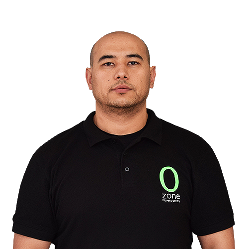

команда
Людмила Богатырь
Тренер/Диетолог
- Сертифицированный персональный тренер с более чем 20-летним опытом;
- Мастер спорта Республики Узбекистан;
- 4-е место на Чемпионате Азии по бодибилдингу в 2013 году;
- 5-е место на Чемпионате Мира по бодибилдингу в 2013 году;
- 4-е место на 49ом Чемпионате Азии по бодибилдингу и фитнесу в 2015 году.
Лола Гуламова
Тренер/Диетолог
- Сертифицированный персональный тренер с более чем 16-летним опытом;
- Мастер спорта Международного класса по кикбоксингу и MMA (смешанные единоборства);
- Пурпурный пояс по бразильскому джиу- джитсу;
- Сертифицированный тренер по BodyTrainingSystem-BodyPump;
- Сертифицированный инструктор по пилатосу, йоге, лечебной физкультуре.
Сухроб Хакимов
Тренер/Диетолог
- Сертифицированный персональный тренер с более чем 10–летним опытом;
- 2-е место на турнире по кросфиту в Дубаи в 2012 году;
- -Призѐр по боксу “MMA FitnessCentre” в Дубаи в 2014 году;
- 3-е место на Чемпионате по смешанным единоборствам "MMA FitnessCentre” в Дубаи в 2015 году.
Хожиакбар Исааков
Тренер/Диетолог
- Сертифицированный персональный тренер с более чем 20-летним опытом;
- 3-е место на открытом Международном Чемпионате Республики Узбекистан по «Муай-Тай» в 1999 году;
- 1-е место на Открытом Международном Чемпионате Республики Узбекистан по «Муай-Тай» в 2000 году;
- Тренер по кикбоксингу.
Рустам Пулатов
Тренер
- Сертифицированный тренер
Александр Сахаров
Тренер/Диетолог
- Сертифицированный персональный тренер с более чем 21-летним опытом;
- Мастер Cпорта международного класса;
- 9-тикратный Чемпион Узбекистана;
- 1-е место на Чемпионате Азии по бодибилдингу в 2013 году;
- 2-е место на Чемпионате Mира по бодибилдингу в 2013 году;
- 2-е место на 49ом Чемпионате Азии по бодибилдингу и фитнесу в 2015 году.

Бахтиёр Эшпулатов
Тренер
- Сертифицированный тренер по Cardiokickboxing
- Мастер спорта
- Чемпион Республики по таэквондо
Нурруло Джумаев
Тренер
- Сертифицированный персональный тренер с более чем 20-летним опытом;
- 1 место в Чемпионате Узбекистана по бодибилдингу и фитнесу
- Призер соревнований «Ночь Чемпионов»

Фирдавс Узаков
Тренер/Диетолог
- Сертифицированный персональный тренер с более чем 6-летним опытом;
- Мастер спорта в Республике Узбекистан;
- 3-е место на турнире «Кубок Ташкента»;
- 3-е место на Чемпионате Андижана по бодибилдингу;
- 1-е место зрительских симпатий на Чемпионате Узбекистана в 2014 году;
- Призер Чемпионата Узбекистана по бодибилдингу в 2014 году.
Рустам Нураев
Тренер/Диетолог
- Сертифицированный персональный тренер с более чем 13-летним опытом;
- Мастер спорта по пауэрлифтингу;
- Рекордсмен Азии 2002-го года;
- Призер Республиканских состязаний по бодибилдингу;
- Главный тренер женской сборной Узбекистана по фитнесу.